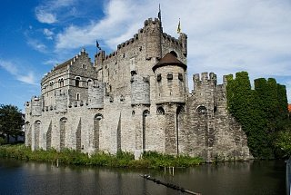

Главная достопримечательность Бельгии – ее многоликая архитектура. Аскетичные романские мотивы, элегантная и одновременно чопорная готика, изобилующий затейливым декором брабантский стиль, изящное барокко и, наконец, его высочество модерн – 99% бельгийских зданий соответствуют как минимум одному из перечисленных направлений.
 Кафедральный собор с алтарем, расписанным самим Ван Эйком, окутанный мрачными легендами замок Герарда Дьявола и неприступный замок-крепость Гравенстен ждут всех фанатов средневекового колорита в Генте. В культурную столицу Валлонии, Льеж, стоит заглянуть, чтобы полюбоваться на собор Святого Павла (воплощенная эклектика, так обожаемая бельгийцами), городскую Ратушу с ее мемориальной доской в честь достопочтенного сыщика Мегре и церковь Сен-Жан, где хранится бесценный образ Богоматери. Место обитания бельгийского епископа, Мехелен, славится своими готическими (собор Святого Румольда) и барочными (церковь Святого Иоанна) храмами. Ну а чемпионом по количеству старинных построек по-прежнему остается Брюссель с его площадью Гранд-Плас, ратушей Отель-де-Виль, дворцом Карла Лотарингского, собором Святого Михаила и бесчисленным количеством безымянных, но не менее древних сооружений.